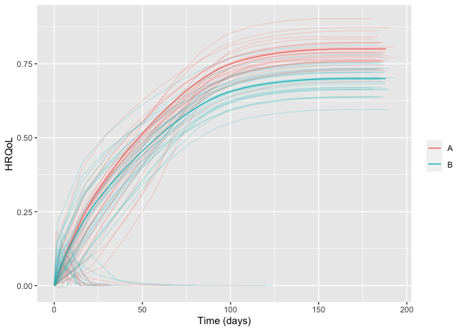

Package for simulating randomised clinical trials with temporal trajectories of health-related quality of life (HRQoL) as the outcome, to quantify effect sizes as single-sampled HRQoL values at end of follow-up and as the area under the trajectories.
Developed as part of the INCEPT (Intensive Care Platform Trial) project (https://incept.dk/), which is primarily supported by a grant from Sygeforsikringen “danmark” (https://www.sygeforsikring.dk/).
Resources
- Website - stand-alone website with full package documentation
-
Health-related quality of life trajectories in critical illness: protocol for a Monte Carlo simulation study - article in Acta Anaesthesiologica Scandinavica outlining the first scientific study to use
hrqolr
Getting started
First, load the package:
library(hrqolr)
#> Loading 'hrqolr' package v0.0.0.9006.
#> For help, run 'help("hrqolr")' or check out https://inceptdk.github.io/hrqolr.The preferred way to design a scenario is by using the setup_scenario function to validate the input and give it the right format. Set verbose = FALSE to silence the validation results.
scenario <- setup_scenario(
arms = c("A", "B"),
n_patients = 100,
sampling_frequency = 14,
index_hrqol = 0.0,
first_hrqol = 0.1,
final_hrqol = c(A = 0.8, B = 0.7),
acceleration_hrqol = c(A = 1.1, B = 1.0),
mortality = 0.4,
mortality_dampening = 0.0,
mortality_trajectory_shape = "exp_decay",
prop_mortality_benefitters = 0.0,
)
#> arms valid as is
#> n_patients modified 100 --> c(A = 100, B = 100)
#> index_hrqol modified 0 --> c(A = 0, B = 0)
#> first_hrqol modified 0.1 --> c(A = 0.1, B = 0.1)
#> final_hrqol valid as is
#> acceleration_hrqol valid as is
#> mortality modified 0.4 --> c(A = 0.4, B = 0.4)
#> mortality_dampening modified 0 --> c(A = 0, B = 0)
#> mortality_trajectory_shape modified "exp_decay" --> c(A = "exp_decay", B = "exp_decay")
#> prop_mortality_benefitters modified 0 --> c(A = 0, B = 0)
#> sampling_frequency modified 14 --> c(A = 14, B = 14)Getting an overview of the final scenario:
scenario
#> arms A B
#> n_patients 100 100
#> index_hrqol 0 0
#> first_hrqol 0.1 0.1
#> final_hrqol 0.8 0.7
#> acceleration_hrqol 1.1 1
#> mortality 0.4 0.4
#> mortality_dampening 0 0
#> mortality_trajectory_shape exp_decay exp_decay
#> prop_mortality_benefitters 0 0
#> sampling_frequency 14 14With the scenario at hand, we can sample a number of example trajectories and visualise them:
example_trajs <- sample_example_trajectories(scenario, n_digits = 3)
plot(example_trajs)
sample_example_trajectories returns a ggplot, allowing you to fine-tune its appearance for your needs. For example, breaking apart the trajectories in the arms apart with facets and hide the legend (remember to load ggplot2 first). Here, we also set the arm-level trajectory in black to make it stand out better:
library(ggplot2)
plot(example_trajs, arm_aes = list(colour = "black")) +
facet_wrap(~ arm) +
theme(legend.position = "none")
You can also summarise the trajectories, e.g., with inter-quartile ranges. The ribbons become a bit wonky at end of follow-up due to increasingly few observations some of which might be low:

The same scenario specification can, then, be used to simulate a desired number of trials. By default hrqolr will print progress updates to the console (silence these with verbose = FALSE):
sims <- simulate_trials(scenario)
#> 2023-11-03 11:32:22: Estimating ground truth of arm 'A' (0 secs)
#> 2023-11-03 11:32:22: Building data.table with patients
#> 2023-11-03 11:32:22: Finding unique patients
#> 2023-11-03 11:32:22: Estimating for 670 unique patients
#> 2023-11-03 11:32:23: Assigning results to all (non-unique) patients
#> 2023-11-03 11:32:23: Starting arm 'A' (0.39 secs)
#> 2023-11-03 11:32:23: Building data.table with patients
#> 2023-11-03 11:32:23: Finding unique patients
#> 2023-11-03 11:32:23: Estimating for 3832 unique patients
#> 2023-11-03 11:32:24: Assigning results to all (non-unique) patients
#> 2023-11-03 11:32:24: Estimating ground truth of arm 'B' (1.43 secs)
#> 2023-11-03 11:32:24: Building data.table with patients
#> 2023-11-03 11:32:24: Finding unique patients
#> 2023-11-03 11:32:24: Estimating for 701 unique patients
#> 2023-11-03 11:32:24: Assigning results to all (non-unique) patients
#> 2023-11-03 11:32:24: Starting arm 'B' (1.82 secs)
#> 2023-11-03 11:32:24: Building data.table with patients
#> 2023-11-03 11:32:24: Finding unique patients
#> 2023-11-03 11:32:24: Estimating for 3844 unique patients
#> 2023-11-03 11:32:25: Assigning results to all (non-unique) patients
#> 2023-11-03 11:32:25: Finished (3.08 secs)
#> 2023-11-03 11:32:25: Sampling example trajectories (3.28 secs)
#> 2023-11-03 11:32:25: Wrapping up, returning output (3.3 secs)The returned object contains quite a lot of interesting information. For example, summary statistics by arm:
sims$summary_stats
#> outcome arm analysis p25 p50 p75 mean sd se
#> 1: primary__hrqol_at_eof A all 0.456 0.483 0.509 0.482 0.035 0.004
#> 2: primary__hrqol_at_eof B all 0.393 0.420 0.440 0.420 0.035 0.003
#> 3: primary__hrqol_auc A all 67.060 70.948 74.581 70.642 5.171 0.517
#> 4: primary__hrqol_auc B all 56.598 60.551 63.371 60.527 4.961 0.496
#> 5: secondary1__hrqol_at_eof A all 0.456 0.483 0.509 0.482 0.035 0.004
#> 6: secondary1__hrqol_at_eof B all 0.393 0.420 0.440 0.420 0.035 0.003
#> 7: secondary1__hrqol_auc A all 66.922 70.831 74.511 70.544 5.172 0.517
#> 8: secondary1__hrqol_auc B all 56.378 60.270 63.095 60.317 4.960 0.496
#> 9: secondary2__hrqol_at_eof A all 0.456 0.483 0.509 0.482 0.035 0.004
#> 10: secondary2__hrqol_at_eof B all 0.393 0.420 0.440 0.420 0.035 0.003
#> 11: secondary2__hrqol_auc A all 62.619 66.223 69.852 66.124 4.820 0.482
#> 12: secondary2__hrqol_auc B all 52.812 56.490 59.340 56.571 4.650 0.465
#> 13: primary__hrqol_at_eof A survivors 0.555 0.588 0.611 0.585 0.037 0.004
#> 14: primary__hrqol_at_eof B survivors 0.492 0.515 0.542 0.518 0.034 0.003
#> 15: primary__hrqol_auc A survivors 81.050 85.877 89.661 85.828 5.520 0.552
#> 16: primary__hrqol_auc B survivors 71.008 73.993 78.385 74.534 4.911 0.491
#> 17: secondary1__hrqol_at_eof A survivors 0.669 0.688 0.705 0.686 0.028 0.003
#> 18: secondary1__hrqol_at_eof B survivors 0.590 0.608 0.630 0.610 0.028 0.003
#> 19: secondary1__hrqol_auc A survivors 97.755 100.685 103.333 100.480 4.113 0.411
#> 20: secondary1__hrqol_auc B survivors 84.576 87.205 90.289 87.550 3.929 0.393
#> 21: secondary2__hrqol_at_eof A survivors 0.781 0.789 0.794 0.787 0.009 0.001
#> 22: secondary2__hrqol_at_eof B survivors 0.689 0.697 0.701 0.694 0.009 0.001
#> 23: secondary2__hrqol_auc A survivors 107.086 108.101 109.081 108.039 1.362 0.136
#> 24: secondary2__hrqol_auc B survivors 92.572 93.707 94.316 93.449 1.271 0.127
#> outcome arm analysis p25 p50 p75 mean sd se–and head-to-head comparisons between the arms:
sims$comparisons
#> statistic primary__hrqol_at_eof primary__hrqol_at_eof primary__hrqol_auc primary__hrqol_auc secondary1__hrqol_at_eof secondary1__hrqol_at_eof secondary1__hrqol_auc secondary1__hrqol_auc secondary2__hrqol_at_eof secondary2__hrqol_at_eof secondary2__hrqol_auc secondary2__hrqol_auc
#> 1: comparator A A A A A A A A A A A A
#> 2: target B B B B B B B B B B B B
#> 3: mean_estimate -0.062 -0.068 -10.114 -11.294 -0.061 -0.076 -10.227 -12.93 -0.061 -0.093 -9.553 -14.59
#> 4: mean_ground_truth -0.095 -0.095 -15.077 -15.077 -0.095 -0.095 -15.159 -15.159 -0.095 -0.095 -14.001 -14.001
#> 5: sd 0.049 0.049 7.063 7.139 0.049 0.039 7.086 5.698 0.049 0.014 6.685 1.931
#> 6: se 0.005 0.005 0.706 0.714 0.005 0.004 0.709 0.57 0.005 0.001 0.668 0.193
#> 7: analysis all survivors all survivors all survivors all survivors all survivors all survivors
#> 8: bias 0.033 0.027 4.963 3.784 0.033 0.019 4.932 2.229 0.033 0.002 4.449 -0.589
#> 9: bias_se 0.005 0.005 0.706 0.714 0.005 0.004 0.709 0.57 0.005 0.001 0.668 0.193
#> 10: relative_bias -0.352 -0.285 -0.329 -0.251 -0.353 -0.198 -0.325 -0.147 -0.353 -0.022 -0.318 0.042
#> 11: relative_bias_se 0.052 0.052 0.047 0.047 0.052 0.041 0.047 0.038 0.052 0.014 0.048 0.014
#> 12: mse 0.004 0.003 74.018 64.77 0.004 0.002 74.043 37.117 0.004 0 64.028 4.037
#> 13: mse_se 0 0 9.616 9.032 0 0 9.633 4.745 0 0 8.354 0.637
#> 14: coverage 0.9 0.89 0.91 0.88 0.9 0.97 0.91 0.97 0.9 0.98 0.92 0.95
#> 15: coverage_se 0.03 0.031 0.029 0.032 0.03 0.017 0.029 0.017 0.03 0.014 0.027 0.022
#> 16: bias_corrected_coverage 1 1 1 1 1 1 1 1 1 1 1 1
#> 17: bias_corrected_coverage_se 0 0 0 0 0 0 0 0 0 0 0 0
#> 18: rejection_proportion 0.2 0.2 0.23 0.28 0.2 0.36 0.24 0.5 0.2 1 0.26 1
#> 19: rejection_proportion_se 0.04 0.04 0.042 0.045 0.04 0.048 0.043 0.05 0.04 0 0.044 0
#> 20: n_sim 100 100 100 100 100 100 100 100 100 100 100 100
#> 21: p25 -0.094 -0.094 -14.751 -15.242 -0.094 -0.102 -14.468 -16.327 -0.094 -0.1 -14.037 -15.766
#> 22: p50 -0.06 -0.068 -9.843 -11.938 -0.06 -0.072 -9.925 -12.243 -0.06 -0.092 -9.153 -14.619
#> 23: p75 -0.03 -0.043 -6.083 -7.879 -0.03 -0.049 -6.106 -8.818 -0.03 -0.082 -5.286 -13.175
#> statistic primary__hrqol_at_eof primary__hrqol_at_eof primary__hrqol_auc primary__hrqol_auc secondary1__hrqol_at_eof secondary1__hrqol_at_eof secondary1__hrqol_auc secondary1__hrqol_auc secondary2__hrqol_at_eof secondary2__hrqol_at_eof secondary2__hrqol_auc secondary2__hrqol_aucInstallation
hrqolr isn’t on CRAN yet but can be installed from GitHub if you have the remotes package installed:
# install.packages("remotes")
remotes::install_github("INCEPTdk/hrqolr")You can also install the development version from directly from GitHub. Doing this requires the remotes-package installed. The development version may contain additional features not yet available in the stable CRAN version, but may be unstable or lack documentation.
remotes::install_github("INCEPTdk/hrqolr@dev")Issues and enhancements
We use the GitHub issue tracker for all bug/issue reports and proposals for enhancements.
Contributing
We welcome contributions directly to the code to improve performance as well as new functionality. For the latter, please first explain and motivate it in an issue.
Changes to the code base should follow these steps:
- Fork the repository
- Make a branch with an appropriate name in your fork
- Implement changes in your fork, make sure it passes R CMD check (with neither errors, warnings, nor notes) and add a bullet at the top of NEWS.md with a short description of the change, your GitHub handle and the id of the pull request implementing the change (check the
NEWS.mdfile to see the formatting) - Create a pull request into the
devbranch ofadaptr
Citation
If using hrqolr, please consider citing it:
citation(package = "hrqolr")
#> To cite package 'hrqolr' in publications use:
#>
#> Kaas-Hansen BS, Granholm A (2023). hrqolr: an R package for
#> simulating health-related quality of life trajectories.
#> https://inceptdk.github.io/hrqolr/
#>
#> A BibTeX entry for LaTeX users is
#>
#> @Manual{,
#> title = {{hrqolr}: an R package for simulating health-related quality of life trajectories},
#> author = {Benjamin Skov Kaas-Hansen and Anders Granholm},
#> year = {2023},
#> url = {https://inceptdk.github.io/hrqolr/},
#> }